The birth of Ma Durga is rooted in the cosmic necessity to restore balance in the universe. Mahishasura, a demon blessed by Lord Brahma, became invincible against any man or god, creating havoc throughout the three worlds. His powers led him to believe that no force could challenge his reign, and his tyranny grew unchecked as he defeated even the mightiest of gods. In desperation, the gods sought help from the supreme powers—Lord Brahma, Vishnu, and Shiva. Realizing that no man or god could defeat Mahishasura, the trinity of gods decided to channel their collective energies to create a being of unmatched strength and divinity. This confluence of powers gave birth to Ma Durga, the goddess of war and strength, who was destined to bring an end to Mahishasura’s terror. Each god contributed to her divine arsenal: Lord Vishnu gave her the Sudarshan Chakra, Shiva gifted her a trident, and Indra bestowed his thunderbolt. Riding a fierce lion, Ma Durga was a manifestation of pure power, created to protect dharma (righteousness) and annihilate evil. Her birth was not only to defeat Mahishasura but also to uphold cosmic balance, making her the eternal protector of the universe.
In ancient times, the demon king Mahishasura had gained invincible powers through severe penance, receiving a boon from Lord Brahma that no man or god could defeat him. Emboldened by this boon, Mahishasura unleashed terror across the heavens and earth, conquering all realms and challenging the very gods themselves. In response to his tyranny, the gods, helpless and desperate, came together to create a force unlike any other—a divine warrior who embodied the collective power of all the gods. From the energy of Brahma, Vishnu, and Shiva, the mighty goddess Durga was born, radiant with beauty and fierce with power. Each god bestowed upon her their most potent weapon: Vishnu gave her his discus, Shiva gave her his trident, and Indra offered his thunderbolt. Mounted on a lion, Durga charged into battle against Mahishasura and his army. The battle raged for nine days and nine nights, with Durga fighting bravely, never faltering. On the tenth day, Durga finally confronted Mahishasura in his buffalo form. As the demon shifted between human and buffalo form, Durga remained undeterred. With a mighty strike of her trident, she pierced his chest, defeating him and restoring peace to the world. This victory symbolizes the triumph of good over evil and is celebrated as Vijayadashami or Dussehra, marking the end of Durga Puja. The name Mahishasura Mardini—meaning "The Slayer of Mahishasura"—is given to Ma Durga to commemorate her victory over the demon.
One of the grandest festivals, especially in Bengal, celebrating Ma Durga’s victory over Mahishasura. Includes vibrant pandals, cultural events, and the immersion of the goddess's idol on the 10th day.
A nine-night festival celebrated across India, honoring Ma Durga in her various forms. Different regions have unique customs like Garba in Gujarat and Kolu in South India.
On the 10th day after Navaratri, Vijayadashami marks the end of Durga Puja with idol immersion and the burning of Ravana’s effigies, celebrating the triumph of good over evil.
In Maharashtra and Gujarat, Ghatsthapana is the ritual to start Navaratri by installing a sacred pot (kalash) and worshipping it for nine days, symbolizing Ma Durga’s presence.
The eighth day of Durga Puja and Navaratri is considered highly auspicious for special prayers and rituals honoring Ma Durga's power.
The beginning of the main Durga Puja celebrations, involving rituals like the bathing of the Navapatrika, signifying the start of the Puja.
Performed at the juncture of Ashtami and Navami, symbolizing the fierce form of Ma Durga as she defeats the demons Chand and Mund.
 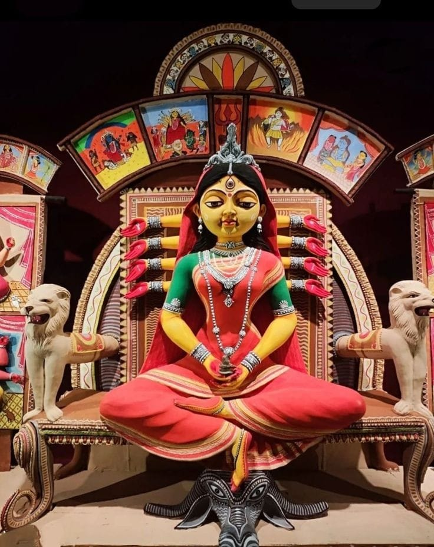
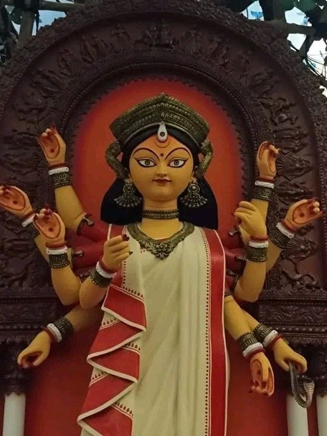
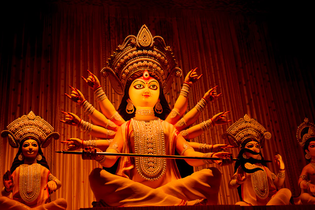
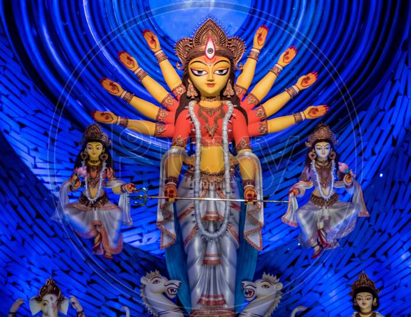
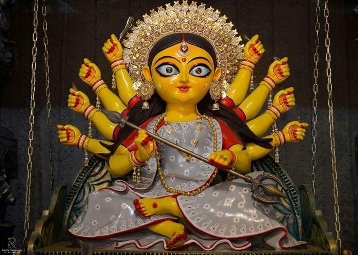
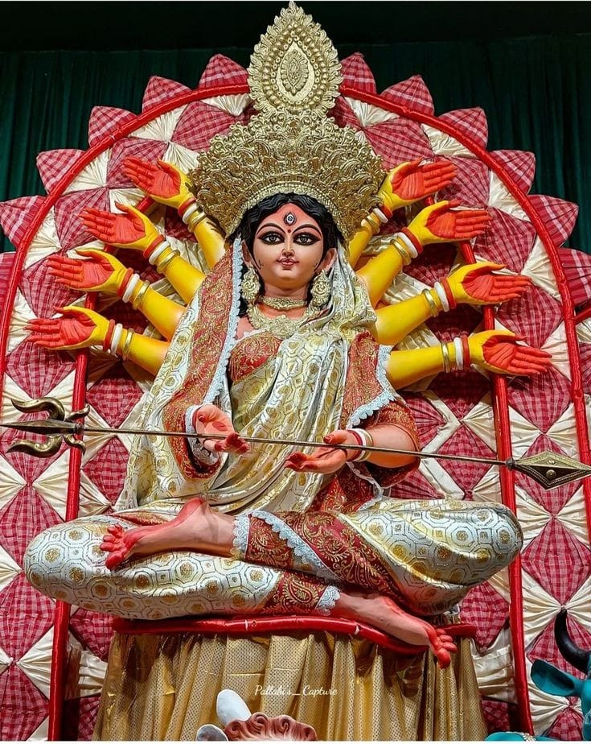
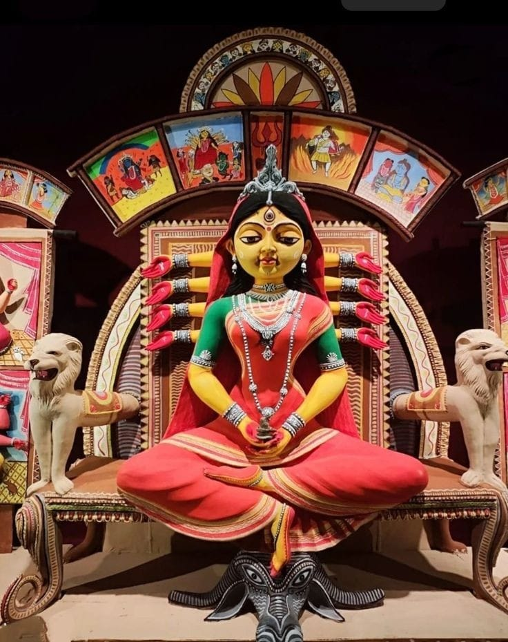
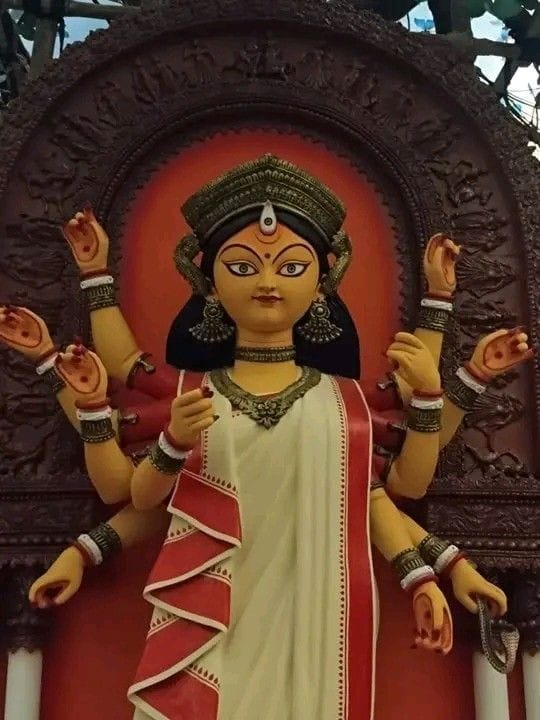
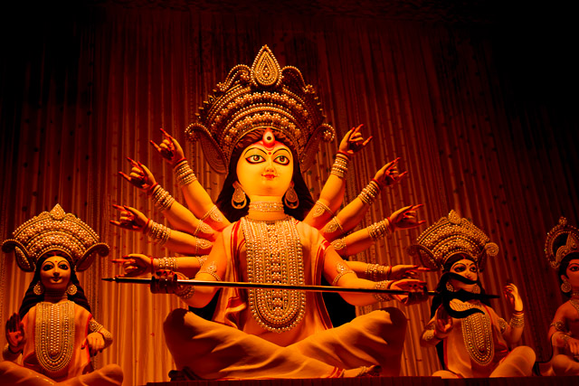
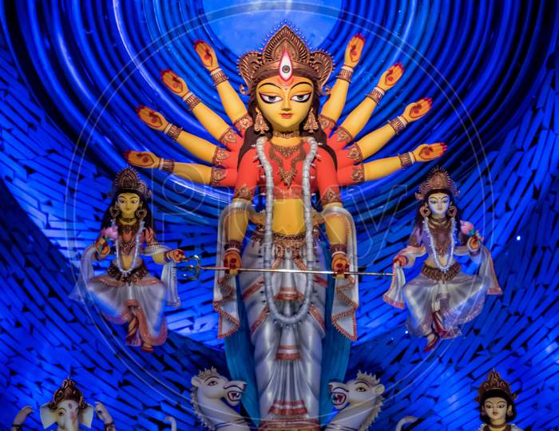
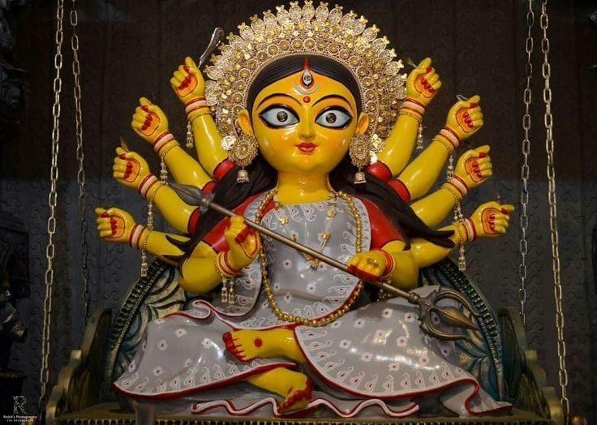
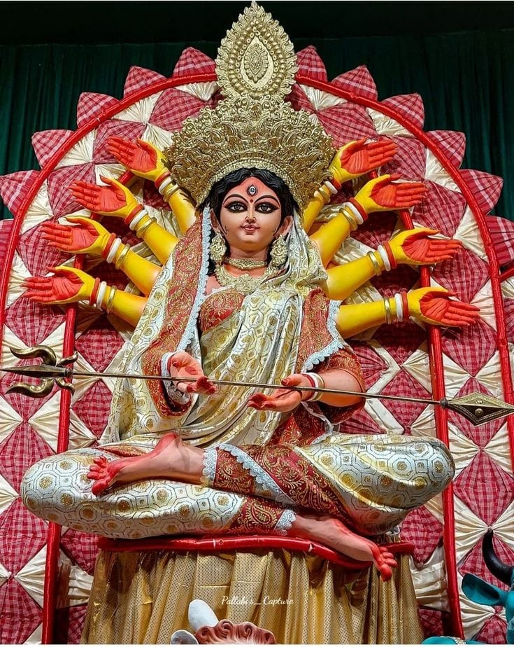